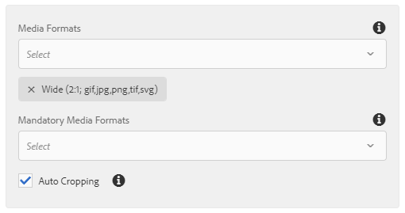
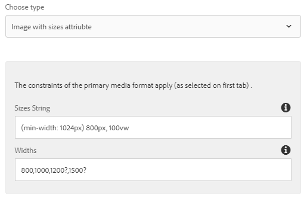
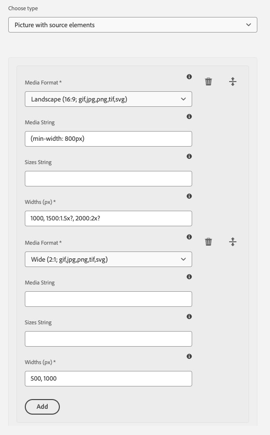

wcm.io
wcm.ioMedia Handler Component Properties
Overview
It is possible to set “component properties” that affect the media handling process for a component as a whole, without having to pass them in the Java Code using the the Media Handler API. These component properties act as default values for both the media handling process and for Granite UI widgets that are used in dialog definitions. They are also used for customizing the cropping ratios in the in-place image editor.
Component properties can be defined at two locations:
- As properties in content policies assigned to the component via the AEM template editor
- As properties in the component resource referenced from the content via
sling:resourceType- Also supports inheritance from super components referenced via
sling:resourceSuperType
- Also supports inheritance from super components referenced via
Content policies have higher precedence than properties defined on the component resource.
Component properties
The following component properties are supported:
| Property name | Description |
|---|---|
wcmio:mediaFormats |
List of media formats accepted by this component (at least one is expected to be resolved). |
wcmio:mediaFormatsMandatoryNames |
List of mandatory media formats (all of them are expected to be resolved). |
wcmio:mediaFormatsMandatory |
List of boolean flags matching the entires of the wcmio:mediaFormats parameter marking some media formats as mandatory. |
wcmio:mediaCropAuto |
Enable “auto-cropping” mode for this component by setting to true. |
wcmio:mediaResponsiveType |
Set responsive image handling type explicitly by setting to imageSizes or pictureSources. |
Child resource wcmio:mediaResponsiveImageSizes
By defining a child resource named wcmio:mediaResponsiveImageSizes the responsive image mode with setting sizes and srcset attributes on the img element is enabled. The child resource has these properties:
| Property name | Description |
|---|---|
sizes |
A valid source size list. Example: (min-width: 1280px) 1200px, 100vw. |
widths |
Widths for the renditions in the srcset attribute, based on the primary media format. Separate widths by ‘,’. Suffix optional widths with ‘?’.", |
Child resource wcmio:mediaResponsivePictureSources
By defining a child resource named wcmio:mediaResponsivePictureSources the responsive image mode with setting picture and source elements enabled. The child resource has a list of additional child resources, with the following properties for each of them:
| Property name | Description |
|---|---|
mediaFormat |
Media format with ratio for the renditions of the source element. |
media |
Optional. A valid media query list. Example: (min-width: 1024px). |
sizes |
Optional. A valid source size list. Example: (min-width: 1280px) 1200px, 100vw. |
widths |
Widths for the renditions in the srcset attribute, based on the primary media format. Separate widths by ‘,’. Suffix optional widths with ‘?’.", |
Content Policy Dialog Snippets
The Media Handler provides snippets for Touch UI design dialogs that can be used for defining the component properties via Content Policies.
Media Format Selection
Dialog snippet /apps/wcm-io/handler/media/components/global/include/mediaFormatSelection:

Responsive Image Settings
Dialog snippet /apps/wcm-io/handler/media/components/global/include/responsiveImageSettings:

